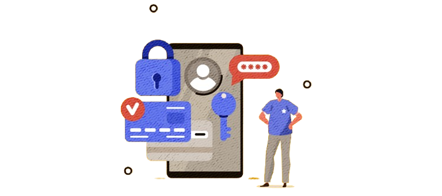
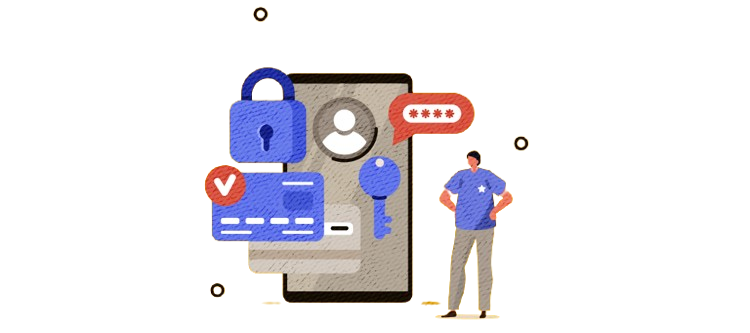
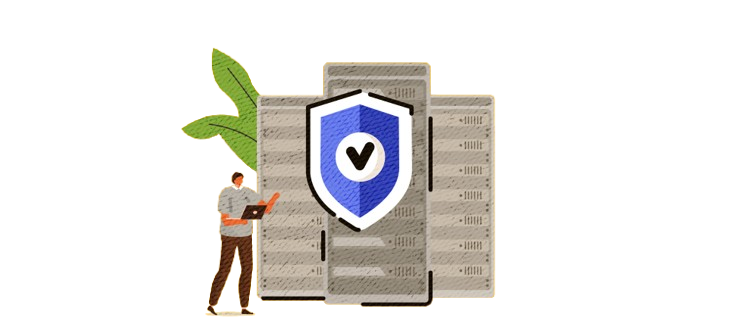
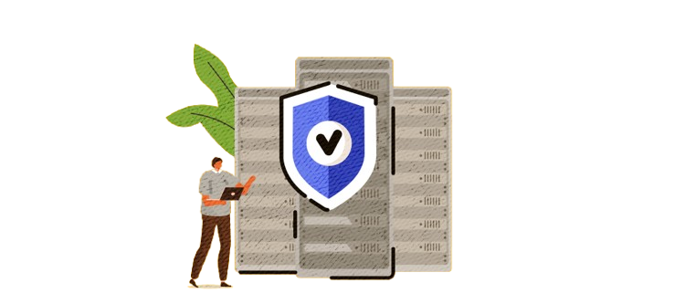

Safe WEB squad
Safe WEB squad
Ми допоможемо розібратися, як захистити себе онлайн та обрати сучасну кіберпрофесію.
У світі, де цифрові технології інтегровані в кожен аспект нашого життя, кібербезпека стає не просто важливою, а критично необхідною. Від персональних даних до національної інфраструктури, усе потребує надійного захисту. Розуміння основ кібербезпеки та можливість захистити себе і свою інформацію є ключовими навичками для кожного.

Ми пояснюємо просто, чому важливо захищати свої дані, пристрої та онлайн-активність.
Дізнатись більше

Ми допоможемо розібратися у професіях майбутнього, пов’язаних з кібербезпекою.
Переглянути професії

Наші дослідження покажуть, де найкращі перспективи і як обрати свій шлях.
Переглянути напрямкиДізнайся, як уникнути шахрайства, захистити свої особисті дані та безпечно використовувати інтернет. Ми пропонуємо практичні поради та покрокові інструкції для кожного, хто хоче почуватися впевнено у цифровому просторі.
 

 

Сфера кібербезпеки стрімко розвивається, пропонуючи безліч можливостей для професійного зростання. Від аналітика безпеки до етичного хакера — ми допоможемо тобі зрозуміти, які навички потрібні та де їх здобути. Розпочни свою подорож у захопливий світ захисту інформації!